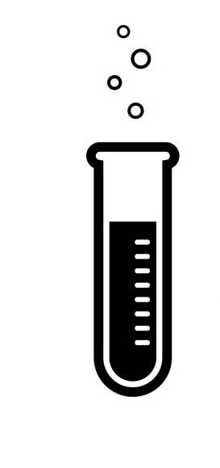
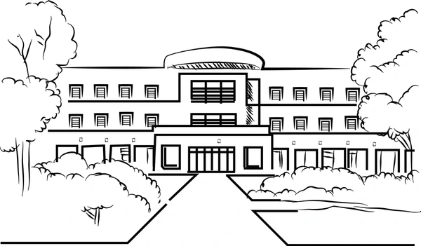
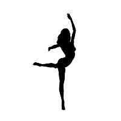
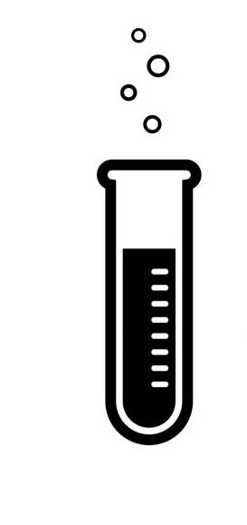
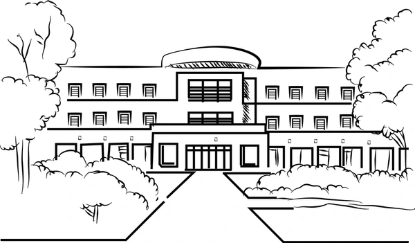
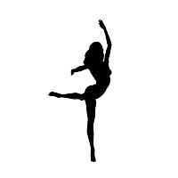

WE BELIEVE IN
BLOCKS&BRANCHES

ABDUL KALAM BLOCK
This is one of the oldest and vast blocks of the campus .
The iconic Gandhi Statue ,
a small lotus pond and a Vinayaka statue compliment it .
All the freshers belonging to all the branches take their
classes here and this is where all of it starts..
ARYA BHATTA BLOCK
Within the Arya Bhatta Block,
home to Computer Science and Chemical Engineering students, innovation thrives.
With state-of-the-art labs and facilities, this block echoes Aryabhata's words:
"Innovation distinguishes between a leader and a follower."
VISWESWARAIAH BLOCK
The Visweswaraiah Block stands as a testament to engineering excellence,
housing Electrical & Electronics,
& Communication, and Biomedical Engineering disciplines.
This block embodies dedication and technological advancement.
ELN BLOCK
The ELN Block is a hub of interdisciplinary collaboration,
specializations
like Data Science, Artificial Intelligence&Data Science,Artificial Intelligence&
Machine Learning, and Business Systems .
BASKARA BLOCK
In the Baskara Block,
Information Technology and Pharmaceutical Engineering find their home,
creativity and discovery intertwine.
CHANAKYA BLOCK
Named after the ancient Indian strategist and philosopher,
Chanakya Block is the cornerstone for Civil Engineering students,
fostering a blend of tradition and innovation.
MECHANICAL BLOCK
Within the Mechanical Block,
the principles of classical mechanics come to life.
With its robust infrastructure and workshops,
it cultivates a spirit of hands-on learning .
Our Legacy
Our Founder
Dr. B V Raju a septuagenarian came from a humble agricultural family of Kumudavalli village near Bhimavaram, W.G.Dist of Andhra Pradesh.B V Raju Institute of Technology (BVRIT) was established by the eminent philanthropist (Late) Padmabhushan Dr. B.V. Raju under the aegis of Sri Vishnu Educational Society (SVES) in the year 1997. BVRIT was granted UGC – Autonomous Status from the year 2014. The Institute is also duly approved by the AICTE and the Government of Telangana State and is affiliated to JNTU, HYDERABAD. CSE, IT, ECE, EEE, Chemical, Mechanical, and Civil Engineering branches in BVRIT are accredited by NBA. BVRIT is accredited by NAAC with an A+ grade.
Our Chairman
Sri K.V. Vishnu Raju An Industrialist, Educationist and Social Entrepreneur, Sri K V Vishnu Raju took over the reigns of Sri Vishnu Educational Society (SVES) after the sad demise of Founder Chairman Padma Bhushan Dr B V Raju in 2002. He brought in a global outlook, strategic vision and passion for social enterprise and institution-building as Chairman of Sri Vishnu Educational Society. As an alumnus of REC (Trichi) & Michigan Technological University (USA), and a brief stint as Chemical Engineer at DuPont DE Nemours Wilmington,
Our Laboratories
Medical Labs
Medical Sciences Lab is a biology/chemistry-based study that prepares students for exciting, challenging and dynamic careers in places such as hospital labs and clinics, industrial research labs. In this lab urine, tissue and human bones are analyzed. These test results play an important role in the detection, diagnosis, and treatment of disease.
Computer Labs
This is where students can learn and upgrade themselves in the field of hands-on coding . It is a lab that will be common to everyone in their freshmen year.Many technical innovations can be done here through the Computers that are properly equipped.
Electrical&Electronic Labs
This lab is well equipped with all basic requirements of electronic components. The main idea is to focus on the basic working of Diodes, Transistors, oscillators and their applications in Rectifiers, Amplifiers and Oscillators. As a part of II year curriculum experiments are conducted in the laboratory.
Student Life
Extra-Curricular & Co-Curricular
BVRIT’s extracurricular and co-curricular opportunities are virtually unlimited. The College provides considerable support to student clubs and other activities, and both novices and accomplished practitioners find opportunities to participate and explore. Indeed for many students extra-curricular activities contribute to the rich community life of the College. Whatever your interests, whether sport, music or community service there will be many opportunities to make the most of your time in BVRIT. If what you want to do is sit and read books, the libraries and the spaces will make this the perfect place to do so. For most, it provides experiences and friendships that will last a lifetime. Faculty who are staying with in the Campus has a lot of experience of working with students and can usually find a way through most problems that arise.
Activities
Sports at BVRIT are an integral part of the curriculum for physical fitness, character building and development of leadership qualities. Confirming the reputation as one of the best sporting institutes in the state, BVRIT offers extensive facilities for sports and games. With pools of talented players, BVRIT has always been among the top contenders for any and every Inter college showdown. Be it inter college, State or National level, BVRITians were proved second to none, more often than not. Besides the vast playgrounds for an outdoor sport, the state-of-the-art Indoor Sports Complex helps BVRITians to practice and stay fit for any sporting Challenge. Set your goal, overcome the bouncers, hit those smashes and ace the boundary line! Game ON!!! So come, sweat out your salts and breathe in the freshness of BVRIT.
Want To Visit Our Campus?
BVRIT is located in the Greater Hyderabad region, Narsapur in close proximity to Sangareddy and IIT Hyderabad. Spanning over 110 acres of land away from the din of the city, this campus trains approximately 4500 students. It nurtures them through their path to education and enlightenment and empowers them for the challenges beyond. A lush green forest surrounds BVRIT. If you like to spend your time, there’s always something to keep you entertained – having coffee with friends, catching a film, boating, or getting involved in clubs and societies. We have a good network of buses to commute to campus from all parts of Hyderabad, Sangareddy, and Medak.